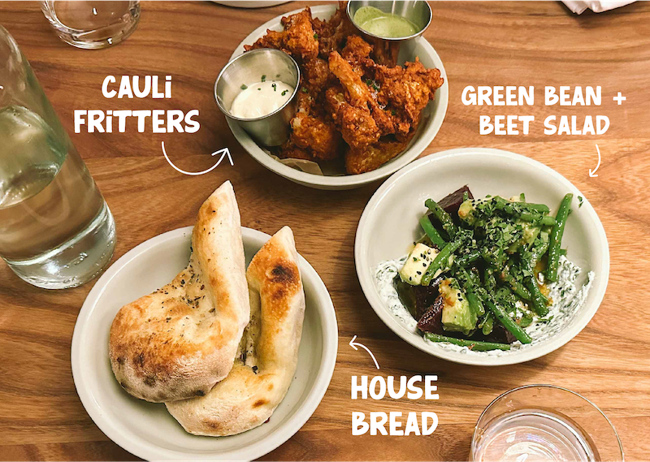

In het hart van Amsterdam West bevindt zich Chèz Nina, een veganistisch restaurant dat de perfecte mix biedt van plantaardige gastronomie en lokale samenwerking. Het restaurant is toegewijd aan veganistisch koken en werkt nauw samen met lokale ondernemers om de meest verse en hoogwaardige ingrediënten te leveren. Bij Chèz Nina proef je niet alleen de liefde voor plantaardige gerechten, maar ook de unieke smaken van Amsterdam.
contact
Wibautstraat 2 Amsterdam
E-mail: hello@chezaurelie.com
telephone: + 31 (0) 12345678